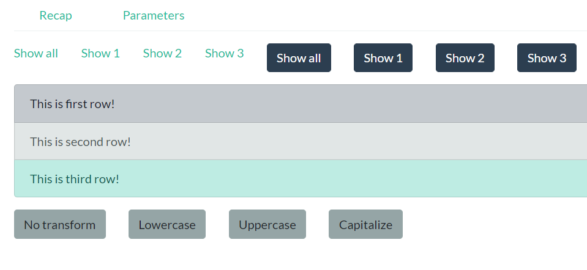

<ul ngbNav class="nav-tabs mb-3" activeId="top-5">
<li ngbNavItem="recap">
<a ngbNavLink routerLink="recap" routerLinkActive="active">Recap</a>
</li>
<li ngbNavItem="params">
<a ngbNavLink routerLink="params" routerLinkActive="active">Parameters</a>
</li>
</ul>
<router-outlet></router-outlet>